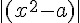
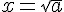
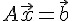
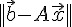

優化的方法
簡介
在人工智慧領域，很多問題最後都可以化為「優化」(最佳化, optimize) 問題。
舉例而言，假如我們想寫個程式計算 a 的平方根，那麼可以寫程式找到  最小值所在的 x，即可找到  的解答。
同樣的，開三次、四次方根，也可以如法泡製，而如果我們要求解聯立方程式的解答，也就是  當中的 x 值，也同樣可以用優化的方式尋找，只要寫程式尋找  的最小值，當這個最小值是零的時候，我們就找到該聯立方程式的解答了。
另外、對於一些看來不像優化問題的領域，最後經常也可以化為優化問題。舉例而言，假如我們要寫一個下五子棋的程式，其實是在尋找一個對局論上的優化解答，而破解密碼也可以視為在尋找讓「祕文」還原成「人類可讀懂」文字的一個優化過程。
「影像辨識」可以視為「影像與現實世界比對結果」的一個優化過程，「語音辨識」則是將「語音解碼為文字」的一個優化過程。而機器人的控制則是尋找一個分數最高的動作來執行，這也是個優化過程。
在優化問題上，目前常見的演算法大致可分為兩類，一類屬於單粒子型的演算法，像是『爬山演算法』與『模擬退火法』等，另一類屬於多粒子型的演算法，像是『遺傳演算法』、『粒子群演算法』與『蟻群演算法』等。
單粒子型的演算法通常較為簡單快速，但是對於具有多個山谷的的最小化問題，或多個山峰的最大化問題而言，很容易落入較差的區域，而多粒子型的演算法，由於粒子分散，相對而言較容易找到好的區域，但是其計算時間通常較長，實作也較為複雜。
單粒子優化算法
爬山演算法 (Hill-Climbing，HC) 是廣為人知的一種基礎性演算法，具有簡單且快速的優點，但此方法落入區域最佳解後，就無法跳出，因而難以找到更好的解。
這是因為爬山演算法只尋找鄰近的點進行比較，而且不允許向較差的方向行走，這使得爬山演算法會落入山谷區(在最小化問題上)或山峰區 (在最大化問題上) 而無法跳出。這使得爬山演算法在較為複雜非線性規劃問題上，很容易陷落到較差的區域，難以找到全域最佳解。
模擬退火法 (Simulated annealing) 改進了爬山演算法的部分缺點，採用以溫度調控的機率特性，讓爬山演算法有機會跳脫較差的區域，因而找到更好的解。但是，當較好的區域距離目前所在地區較遠時，模擬退火演算法通常難以逆向爬升脫離較大的山谷。
多粒子的隨機演算法
為了克服單粒子隨機演算法的缺點，許多論文嘗試使用多粒子的隨機演算法，這些演算法後來被統稱為群體演算法 (Swarm Optimization Method) 像是進化演算法(Evolutionary algorithm)、粒子群優化(Particle Swarm Optimization) 等演算法，以解決複雜型的非線性規畫問題。
輔助策略
對於某些較複雜的非線性規畫問題而言，直接對問題進行最佳化可能會遇到某些困境，此時可以進一步採用『增廣式拉格朗日算法』 (Augmented Lagrangian Method，ALM)，將非線性規畫問題轉化為對偶性的最大化-最小化 (Min-Max) 問題，以幫助這些方法能找到較好的解，像是 Co-PSO 與 Co-Evolutionary 等方法，就使用了ALM 的轉化方式。